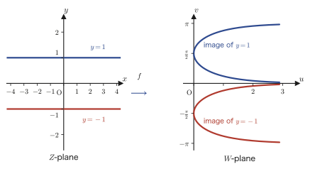

Chapter 23Elementary Complex Functions — Exponential, Logarithm, Power, and Trigonometric Functions
In the previous chapter (Chapter 22), we learned to view a complex function as a “mapping from the complex plane to the complex plane.” The linear function $w=\alpha z+\beta$ was a rotation combined with scaling, the complex polynomial function of degree $n$ was a mapping given by a polynomial, and the linear fractional function $w=\dfrac{\alpha z+\beta}{\gamma z+\delta}$ was a combination of inversion and translation. In this chapter we finally extend the “named functions” that you have been familiar with since high school—the exponential function, the logarithm, powers, and the trigonometric functions—to the world of complex numbers. In complex analysis these are called elementary functions, and they are the leading players that keep appearing in all the chapters that follow (holomorphic functions, complex integration, Fourier series).
You may feel apprehensive when you hear of “putting a complex number in an exponent” or “taking the logarithm of a complex number,” but once the trick is revealed, the tools are already in our hands: the polar form $z=r(\cos\theta+i\sin\theta)=re^{i\theta}$ that we learned in Chapter 21, and Euler's formula. The definition of the exponential function in this chapter is given precisely on the basis of Euler's formula. What awaits beyond it is a succession of astonishing facts. For example, $i^i$, “an imaginary number raised to an imaginary power,” turns out to be not even a genuinely complex number but an ordinary real number, $0.2079\ldots$. Also, the logarithm of a negative number such as $\log(-1)$ can be computed without hesitation in the world of complex numbers (its value is $i\pi$). And at the end, we will understand visually, by looking from the standpoint of a hidden second coordinate axis (the imaginary axis), why the solutions $\pm i$ of $x^2+1=0$, which supposedly “cannot be found among the real numbers,” appear. By the end of this chapter you will be able to compute exponentials, logarithms, powers, and trigonometric functions freely in the world of complex numbers, and to picture in a figure how they “map” the complex plane. In the next chapter, Chapter 24, we will learn what it means for these functions to be differentiable (holomorphic), through the Cauchy–Riemann equations.
- The definition of the complex exponential function $e^z=e^{x+iy}=e^x(\cos y+i\sin y)$, and complete proofs of the four properties that correspond to the laws of exponents
- How the complex exponential function maps the complex plane—vertical lines become circles and horizontal lines become half-lines, and the correspondence is many-to-one unless the range of $y$ is restricted
- The definition of the complex logarithm $\log z=\log\abs z+i\arg z$ (as the inverse problem of $z=e^w$), and its essential multivaluedness
- The definition of the complex power $z^c=e^{c\log z}$, and concrete computations such as $i^i$, $(1+i)^i$, and $(2i)^{1+i}$
- How the logarithm maps the complex plane—circles become vertical lines and half-lines become horizontal lines (exactly the reverse of the exponential mapping)
- The definition of the complex trigonometric functions $\sin z,\ \cos z$ by power series, and their relation to the exponential function, $\cos z=\dfrac{e^{iz}+e^{-iz}}2$
- The idea of “seeing,” in a figure that includes the hidden imaginary axis, solutions of equations that are invisible in the real world (such as the solutions $\pm i$ of $x^2+1=0$)
Source notes: Yasuhide Mochizuki, Mathematics Notes: Complex Analysis, pp. 15–20.
23.1 The Complex Exponential Function — Definition and Properties
We want to define the exponential function $e^x$ ($x$ a real number), which we learned in high school mathematics, for complex numbers $z=x+iy$ ($x,y\in\R$) as well. But what does it even mean to “raise $e$ to a complex power”? Rather than defining it abstractly out of the blue, let us start from the requirement “this is how we want it to behave” and construct the form of the definition ourselves.
Intuition: Working backward from the law of exponents to the form of the definition
If we want the law of exponents $a^{m+n}=a^m a^n$ for real numbers to hold for complex numbers as well, then for $z=x+iy$ we should be able to make the decomposition
$$ e^{z}=e^{x+iy}=e^{x}\cdot e^{iy} $$Here $e^x$ is the real exponential function we are used to from high school mathematics, so we can leave it as it is. The problem is the meaning of $e^{iy}$ ($y$ real). This is exactly Euler's formula $e^{i\theta}=\cos\theta+i\sin\theta$ ($\theta$ real) that we studied in Chapter 21. Substituting it, we get
$$ e^{z}=e^{x}(\cos y+i\sin y) $$This form arises naturally. Let us adopt it as the definition of the complex exponential function.
Definition 23.1: Complex exponential function
For a complex number $z=x+iy$ ($x,y\in\R$), we define the complex exponential function by
$$ \begin{equation} W=f(z)=e^{z}=e^{x+iy}=e^{x}(\cos y+i\sin y) \label{eq:23-expdef} \end{equation} $$This is our definition.
Math Note: This is a “definition,” not a “proof”
In the source notes, just beneath the second equals sign of Eq. \eqref{eq:23-expdef} (the part $e^{x+iy}=e^x\cdot e^{iy}$), the author has written, in the author's own hand and in small letters, “distributive law (?).” This is the author's own perfectly reasonable question: the law of exponents $a^{m+n}=a^m a^n$ for real numbers has not yet been proved for complex numbers, so may we use it to construct a definition?
The answer is “yes, we may.” The reason is that what we did in the Intuition box above was merely motivation for a definition that is simply handed down from above; in terms of logical order, Eq. \eqref{eq:23-expdef} itself is declared by fiat as a new definition. That the law of exponents really does hold for complex numbers (which confirms that the definition was “the right one”) will be proved afresh below as property (i). Not confusing “the idea behind making a definition” with “the proof that the definition has the expected properties” is an important way of thinking that matters throughout university mathematics.
This definition also offers some reassurance: when $y=0$ ($z$ real), we get $e^{z}=e^{x}(\cos0+i\sin0)=e^{x}$, which agrees exactly with the familiar real exponential function. The complex exponential function is thus an “extension” of the real exponential function to the whole complex plane.
Next, let us show that this definition yields four properties corresponding to the laws of exponents for real numbers. In the original notes, these are summarized as “Properties.”
Theorem 23.1: Properties of the complex exponential function
For arbitrary complex numbers $z_1,z_2\in\C$ and any integer $n\in\Z$, the following hold.
$$ \text{(i)}\ \ e^{z_1}e^{z_2}=e^{z_1+z_2} \qquad\qquad \text{(ii)}\ \ \frac{e^{z_1}}{e^{z_2}}=e^{z_1-z_2} $$ $$ \text{(iii)}\ \ (e^{z_1})^{n}=e^{nz_1} \qquad\qquad \text{(iv)}\ \ e^{z_1+i2n\pi}=e^{z_1} $$Let us follow the proof of each, without skipping any intermediate computation.
Proof (i): $e^{z_1}e^{z_2}=e^{z_1+z_2}$
Let $z_1=x_1+iy_1$ and $z_2=x_2+iy_2$ ($x_1,y_1,x_2,y_2\in\R$). By Definition 23.1, $e^{z_1}=e^{x_1}(\cos y_1+i\sin y_1)$ and $e^{z_2}=e^{x_2}(\cos y_2+i\sin y_2)$, so multiplying these together gives
$$ e^{z_1}\cdot e^{z_2} = \underbrace{e^{x_1}\cdot e^{x_2}}_{\text{law of exponents for real numbers}}\cdot(\cos y_1+i\sin y_1)(\cos y_2+i\sin y_2) . $$Here we used the (known) law of exponents for real numbers to write $e^{x_1}\cdot e^{x_2}=e^{x_1+x_2}$. Expanding the remaining product of the two complex numbers gives
$$ (\cos y_1+i\sin y_1)(\cos y_2+i\sin y_2) =(\cos y_1\cos y_2-\sin y_1\sin y_2)+i(\sin y_1\cos y_2+\cos y_1\sin y_2) $$(We simply expanded, keeping $i^2=-1$ in mind, and sorted the result into real and imaginary parts.) Now, recalling the addition formulas from high school mathematics, the real part is exactly $\cos(y_1+y_2)$ and the imaginary part is exactly $\sin(y_1+y_2)$:
$$ \underbrace{\cos y_1\cos y_2-\sin y_1\sin y_2}_{=\cos(y_1+y_2)} \ +\ i\underbrace{(\sin y_1\cos y_2+\cos y_1\sin y_2)}_{=\sin(y_1+y_2)} . $$Therefore we obtain
$$ e^{z_1}\cdot e^{z_2}=e^{x_1+x_2}\{\cos(y_1+y_2)+i\sin(y_1+y_2)\}\overset{\text{def}}{=}e^{(x_1+x_2)+i(y_1+y_2)} $$The last equality simply reads Definition 23.1 from right to left (Eq. \eqref{eq:23-expdef} with $x=x_1+x_2$ and $y=y_1+y_2$). On the other hand, looking at the exponent, $(x_1+x_2)+i(y_1+y_2)=(x_1+iy_1)+(x_2+iy_2)=z_1+z_2$, so
$$ e^{z_1}\cdot e^{z_2}=e^{z_1+z_2} $$Thus the claim has been shown. ∎
Proof (ii): $\dfrac{e^{z_1}}{e^{z_2}}=e^{z_1-z_2}$
The source notes say “omitted, since it is similar to (i),” but here we write it out in full. First, the absolute value of $e^{z_2}=e^{x_2}(\cos y_2+i\sin y_2)$ is $\abs{e^{z_2}}=e^{x_2}\abs{\cos y_2+i\sin y_2}=e^{x_2}\cdot1=e^{x_2}\gt0$, so $e^{z_2}\neq0$ (this guarantees, to begin with, that division is allowed).
Next, applying property (i) to $z_1-z_2$ and $z_2$, we have
$$ e^{z_2}\cdot e^{z_1-z_2}=e^{z_2+(z_1-z_2)}=e^{z_1} $$Dividing both sides by $e^{z_2}$ (which we have already confirmed is nonzero), we obtain
$$ e^{z_1-z_2}=\frac{e^{z_1}}{e^{z_2}} $$which is the property (ii) we wanted. ∎
Proof (iii): $(e^{z_1})^{n}=e^{nz_1}$ ($n\in\Z$)
Let $z_1=x_1+iy_1$. Raising $e^{z_1}=e^{x_1}(\cos y_1+i\sin y_1)$ to the $n$th power gives
$$ (e^{z_1})^{n}=e^{nx_1}\cdot(\cos y_1+i\sin y_1)^{n} $$(the $n$th power of the real factor $e^{x_1}$ simply becomes $e^{nx_1}$ by the law of exponents for real numbers). Now, using de Moivre's theorem $(\cos\theta+i\sin\theta)^n=\cos n\theta+i\sin n\theta$, which we studied in Chapter 21, we get
$$ (\cos y_1+i\sin y_1)^{n}\overset{\text{de Moivre}}{=}\cos ny_1+i\sin ny_1 $$so
$$ (e^{z_1})^{n}=e^{nx_1}(\cos ny_1+i\sin ny_1)\overset{\text{def}}{=}e^{nx_1+iny_1}=e^{n(x_1+iy_1)}=e^{nz_1} $$This gives the claimed equality. ∎
Proof (iv): $e^{z_1+i2n\pi}=e^{z_1}$ ($n\in\Z$)—periodicity
Applying property (i) to $z_1$ and $i2n\pi$ gives
$$ e^{z_1+i2n\pi}=e^{z_1}\cdot e^{i2n\pi} $$Now, using Euler's formula (the case $\theta=2n\pi$), we get
$$ e^{i2n\pi}=\cos2n\pi+i\sin2n\pi . $$Since $n$ is an integer, $2n\pi$ is exactly an integer multiple of $2\pi$ (a full turn of the circle), and by the periodicity of the trigonometric functions from high school mathematics, $\cos2n\pi=1$ and $\sin2n\pi=0$. Therefore $e^{i2n\pi}=1+i\cdot0=1$, and hence
$$ e^{z_1+i2n\pi}=e^{z_1}\cdot1=e^{z_1} $$Thus the claim has been shown. ∎
Caution: The complex exponential function is not “one-to-one”
Property (iv) means that the complex exponential function $e^z$ is a periodic function with period $2\pi i$ in the imaginary direction. Whereas the real exponential function $e^x$ is monotonically increasing and one-to-one (different values of $x$ always correspond to different values), the complex exponential function returns the same value at $z$ and at all of $z+2\pi i,\ z+4\pi i,\ z-2\pi i,\ldots$. In other words, $e^z$ is not one-to-one on the complex plane as a whole. We will visualize this fact as a mapping in the next section, Section 23.2, and it will come back in Section 23.3 as the question of “why the complex logarithm is not determined as a single value.”
Example 23.1: Finding a value of the complex exponential function in rectangular form
Write $e^{2+i\pi/2}$ in rectangular form $a+bi$ ($a,b\in\R$).
Solution. Substituting $x=2$ and $y=\pi/2$ into Definition 23.1, we get
$$ e^{2+i\pi/2}=e^{2}\left(\cos\frac{\pi}{2}+i\sin\frac{\pi}{2}\right) . $$Using the values of the trigonometric functions from high school mathematics, $\cos(\pi/2)=0$ and $\sin(\pi/2)=1$, we get
$$ e^{2+i\pi/2}=e^{2}(0+i\cdot1)=e^{2}i . $$Since $e^2=7.389\ldots$, in rectangular form $e^{2+i\pi/2}=0+7.389\ldots\,i$ (a pure imaginary number).
23.2 Mappings Produced by the Complex Exponential Function
As we learned in Chapter 22, a complex function $W=f(z)$ can be regarded as a “mapping from the $Z$-plane to the $W$-plane.” Let us see concretely which figures the complex exponential function $W=e^z$ maps onto which figures.
Derivation: The correspondence $R=e^x$, $\theta=y$
For $z=x+iy$ we have $W=f(z)=e^{z}=e^{x}\cos y+ie^{x}\sin y$, so we can write the real and imaginary parts as
$$ \begin{cases} u(x,y)=e^{x}\cos y \\ v(x,y)=e^{x}\sin y \end{cases} $$On the other hand, a point of the $W$-plane can also be written in polar form as $W=Re^{i\theta}$ ($R=\abs W\ge0$, $\theta=\arg W$). Comparing $W=Re^{i\theta}=R\cos\theta+iR\sin\theta$ with the expressions for $u,v$ above, we see that the correspondence
$$ R=e^{x},\qquad \theta=y $$holds. That is, the real part $x$ of a point in the $Z$-plane directly becomes the inverse of the logarithm of the distance (absolute value) from the origin in the $W$-plane, and the imaginary part $y$ of a point in the $Z$-plane directly becomes the argument in the $W$-plane. Now let us find concretely the images of various figures in the $Z$-plane.
Remember: Without restricting the range of $y$, the correspondence is many-to-one
In the correspondence $\theta=y$ above, if the range of $y$ is not restricted, then, for example, $y$ and $y+2\pi$ represent the same $\theta$ (argument), because the argument returns to its original value after advancing by $2\pi$. Therefore, consistent with property (iv) (periodicity) of the previous section, unless the range of $y$ is restricted, $e^z$ becomes a many-to-one correspondence (infinitely many preimages correspond to a single image). In [i] and [ii] below, we restrict the range of $y$ to $-\pi\le y\lt\pi$ (one full turn).
[i] When $x=x_0$ (constant)—a vertical segment is mapped to a circle.
Fix $x=x_0$ and let only $y$ vary over the range $-\pi\le y\lt\pi$. In the $Z$-plane this represents the vertical segment extending from the point $(x_0,-\pi)$ to $(x_0,\pi)$. The image is then
$$ R=e^{x_0}\ (\text{constant, independent of $y$}),\qquad \theta=y\ (-\pi\le y\lt\pi) $$Since $R$ is constant and only $\theta$ goes around one full turn, the image is the circle of radius $e^{x_0}$ centered at the origin (except that the single point corresponding to the argument $\theta=\pi$ is identified with the point at $\theta=-\pi$ and therefore overlaps it, so it is effectively excluded). Figure 23.1 shows this.
[ii] When $y=y_0$ (constant)—a horizontal line is mapped to a half-line.
This time fix $y=y_0$ and let $x$ vary from $-\infty$ to $+\infty$. This is a horizontal line in the $Z$-plane. The image is
$$ R=e^{x}\ (x\ \text{increases, so it moves from}\ 0\ \text{to}\ \infty\ \text{}),\qquad \theta=y_0\ (\text{constant}) $$Since $\theta$ is constant and only $R$ moves over $(0,\infty)$, the image is a half-line through the origin that does not contain the origin. Expressed in Cartesian coordinates, from $u=R\cos\theta_0$, $v=R\sin\theta_0$ we get $v/u=\tan y_0$, that is,
$$ v=(\tan y_0)\,u \qquad(u\gt0) $$and so the line is mapped to this half-line. (When $y_0=\pm\pi/2$, $\tan y_0$ is not defined, but in this case the image is exactly the half-line $u=0$ on the imaginary axis ($v\gt0$ if $y_0=\pi/2$, $v\lt0$ if $y_0=-\pi/2$).)
Combining [i] and [ii], we see that the strip-shaped region $\{x+iy: x\in\R,\ 0\le y\lt2\pi\}$ in the $Z$-plane (a band of width $2\pi$ that extends infinitely far horizontally) is mapped exactly one-to-one onto the entire $W$-plane except the origin. This is because the vertical lines are responsible for the “radius” of the concentric circles, and the horizontal lines are responsible for the “direction” from the origin.
Example 23.2: Finding the image of a line
Find the image of the line $y=\pi/4$ under the complex exponential function $W=e^z$, and sketch it.
Solution. This is case [ii] with $y_0=\pi/4$. The image is the half-line through the origin
$$ v=\left(\tan\frac{\pi}{4}\right)u=u\qquad(u\gt0) $$(we used $\tan(\pi/4)=1$). That is, it is the half-line extending at an angle of $45^\circ$ measured from the positive part of the $u$-axis. Indeed, setting $z=x+i\pi/4$ gives $e^{z}=e^{x}(\cos(\pi/4)+i\sin(\pi/4))=\dfrac{e^{x}}{\sqrt2}(1+i)$, and the ratio of the real part to the imaginary part is always $1$.
23.3 The Complex Logarithm
In high school mathematics, the logarithmic function was defined as the inverse function of the exponential function: $y=\log_a x \iff x=a^y$. In the world of complex numbers we follow the same idea and define the logarithm by taking the inverse of the exponential function. However, if we recall the caution in Section 23.1 ($e^z$ is not one-to-one), we can predict that the moment we take the inverse, the problem arises that the result is “not determined uniquely.” Let us confirm this by actually computing.
Definition 23.2: Complex logarithm
When two complex numbers $z,w$ satisfy the relation $z=e^{w}$, we call $w$ the complex logarithm of $z$ and define it by
$$ w=\log z\qquad(z\neq0) $$(We exclude $z=0$ because $e^w\neq0$ for every complex number $w$, so there is no $w$ that satisfies $e^w=0$.)
Derivation: $\log z=\log\abs z+i\arg z$
Let $z=x+iy$ and $w=u+iv$ ($x,y,u,v\in\R$), and also write $z$ in the polar form of Chapter 21 as $z=re^{i\theta}$ ($r=\abs z\gt0$, and $\theta$ is one of the arguments of $z$). Substituting $w=u+iv$ into the relation $z=e^{w}$ of Definition 23.2, we get
$$ z=e^{u+iv}=e^{u}\cdot e^{iv} $$Since the left-hand side is also $z=re^{i\theta}$, we obtain the equality
$$ re^{i\theta}=e^{u}\cdot e^{iv} $$Now recall the periodicity of Euler's formula (property (iv) of Section 23.1). Since $\theta$ and $\theta+2n\pi$ ($n\in\Z$) represent exactly the same complex number, the angle on the right-hand side must also be written, in general, not as $v$ itself but in the form $v+2n\pi$:
$$ re^{i\theta}=e^{u}\cdot e^{i(v+2n\pi)} $$Comparing the absolute values and the arguments of the two sides separately, we find that
$$ \therefore\begin{cases} r=e^{u} \\ \theta=v+2n\pi\quad(n\in\Z) \end{cases} $$These relations hold (because the absolute values are equal to each other and the arguments are equal to each other). Solving the first equation $r=e^{u}$ for $u$ gives $u=\log r$ (the real logarithm, which is defined because $r\gt0$). Also, since $r=\abs z$, we can write $u=\log\abs z$. Solving the second equation for $v$ gives $v=\theta-2n\pi$, but since $n$ was an arbitrary integer, we may align the signs and write once more $v=\theta+2n\pi$ ($n\in\Z$). This is precisely “all the values permitted as an argument of $z$,” that is, the very definition of the argument $\arg z$ (Chapter 21). Hence $v=\arg z$ (multivalued). Summarizing, we have
$$ \begin{equation} \log z=u+iv=\log\abs z+i\arg z \label{eq:23-logdef} \end{equation} $$Thus the formula is obtained.
Caution: The complex logarithm is inherently multivalued
The $\arg z$ in Eq. \eqref{eq:23-logdef} is a multivalued quantity that has infinitely many values $\theta+2n\pi$, one for each $n\in\Z$. Therefore $\log z$ itself is also a multivalued function: its real part $\log\abs z$ is determined uniquely, but its imaginary part takes infinitely many values spaced $2\pi$ apart. This is the flip side of what we saw in the previous section, namely that “$e^z$ is a many-to-one mapping with period $2\pi i$,” and there is nothing mysterious about it. To avoid confusion, from now on, unless stated otherwise, we use the value obtained by restricting the argument to the range $-\pi\lt\arg z\le\pi$ (the principal value). The logarithm that takes only the principal value is sometimes distinguished by writing it $\operatorname{Log}z$ (with a capital letter), but in this book we simply write $\log z$ when the meaning is clear from the context, and we will add a remark again in situations where multivaluedness matters.
Example 23.3: Logarithm of a negative real number
Find $\log(-1)$.
Solution. Let $z=-1$. Then $\abs z=1$ and $\arg z=\pi+2n\pi$ ($n\in\Z$; since $-1$ lies on the negative part of the real axis, its argument is $\pi$, or that value plus an integer multiple of $2\pi$). By Eq. \eqref{eq:23-logdef} we obtain
$$ \log(-1)=\log1+i(\pi+2n\pi)=i(\pi+2n\pi)\qquad(n\in\Z) $$Taking the principal value ($n=0$) gives $\log(-1)=i\pi$. Note that the “logarithm of a negative number,” which could never be defined in the world of real numbers, can be computed with confidence in the world of complex numbers (and with infinitely many values, no less!). As a check, $e^{i\pi}=\cos\pi+i\sin\pi=-1+0=-1$, so the relation $z=e^{w}$ of Definition 23.2 is indeed satisfied.
23.4 Complex Powers
In high school mathematics we dealt only with integer powers such as $2^{3}$ and rational powers such as $2^{1/2}=\sqrt2$, but in fact an irrational power such as $2^{\sqrt2}$ can also be defined, using the exponential and logarithmic functions, as $2^{\sqrt2}=e^{\sqrt2\log2}$ (this is also the method used internally when a calculator computes $2^{\sqrt2}$). Let us extend the same idea to complex numbers.
Definition 23.3: Complex power
We define the complex power by
$$ \begin{equation} z^{c}=e^{c\log z} \label{eq:23-powdef} \end{equation} $$for $z,c\in\C$ ($z\neq0$).
Caution: Complex powers are also multivalued in general
The $\log z$ in Eq. \eqref{eq:23-powdef} is multivalued, as we saw in the previous section (infinitely many values, spaced $2\pi i$ apart), so $z^c$ is in general multivalued as well. There is, however, an exception: when $c=m$ is an integer, substituting the different branches $\log\abs z+i(\theta+2n\pi)$ of $\log z$ into Eq. \eqref{eq:23-powdef} makes the difference appearing in the exponent equal to $m\cdot i2n\pi$, and by property (iv) of Section 23.1 (period $2\pi i$) the value of $e^{c\log z}$ itself does not change whichever branch we choose. That is, only when $c$ is an integer is $z^c$ determined as a single value, and it then agrees with the familiar “integer power.” On the other hand, when $c$ is not an integer (as in the examples below, where $c=i$ or $c=1+i$), the value differs according to which branch (which value of $n$) we choose. In the examples below, unless stated otherwise, we adopt $n=0$ (the principal value).
Let us follow the three worked computations in the original notes, without omitting any intermediate steps.
Illustration 23.1: Computing $i^{i}$
Consider the case $z=i$, $c=i$. First we need $\log z=\log i$. Since $\abs i=1$ and $\arg i=\dfrac{\pi}{2}+2n\pi$ (because $i$ lies on the positive part of the imaginary axis, its argument is $\pi/2$), we have
$$ \log z=\log\abs i+i\arg i=\log1+i\left(\frac{\pi}{2}+2n\pi\right)=i\left(\frac{\pi}{2}+2n\pi\right) $$where we used $\log1=0$. Therefore, by Definition 23.3, we have
$$ i^{i}=e^{c\log z}=e^{\,i\cdot i\left(\frac\pi2+2n\pi\right)}=e^{\,i^{2}\left(\frac\pi2+2n\pi\right)}=e^{-\left(\frac\pi2+2n\pi\right)} $$where we used $i^2=-1$. Taking the principal value ($n=0$), we get $i^{i}=e^{-\pi/2}=0.2079\ldots$. We raise an imaginary number to an imaginary power, yet the result is a positive real number—this is a representative example of the surprising properties of complex powers.
Illustration 23.2: Computing $(1+i)^{i}$
Consider the case $z=1+i$, $c=i$. Since $\abs{1+i}=\sqrt{1^2+1^2}=\sqrt2$ and $\arg(1+i)=\dfrac{\pi}{4}+2n\pi$ (the number $1+i$ lies in the first quadrant and its real and imaginary parts are equal, so its argument is $\pi/4$), we have
$$ \log z=\log\abs{1+i}+i\arg(1+i)=\log\sqrt2+i\left(\frac{\pi}{4}+2n\pi\right) . $$Therefore we have
$$ (1+i)^{i}=e^{i\left\{\log\sqrt2+i\left(\frac{\pi}{4}+2n\pi\right)\right\}} =e^{\,i\log\sqrt2-\left(\frac{\pi}{4}+2n\pi\right)} =e^{-\left(\frac{\pi}{4}+2n\pi\right)}\cdot e^{\,i\log\sqrt2} $$where we split the exponent into the real part $-(\pi/4+2n\pi)$ and the imaginary part $\log\sqrt2$, and used the form $e^{a+bi}=e^a(\cos b+i\sin b)$ of Definition 23.1 in the reverse direction. Taking the principal value ($n=0$) and converting to rectangular form with Euler's formula, we see that
$$ (1+i)^{i}=e^{-\pi/4}\bigl(\cos(\log\sqrt2)+i\sin(\log\sqrt2)\bigr)=0.4288\ldots+0.1549\ldots\,i $$holds.
Illustration 23.3: Computing $(2i)^{1+i}$
Consider the case $z=2i$, $c=1+i$. Since $\abs{2i}=2$ and $\arg(2i)=\dfrac{\pi}{2}+2n\pi$ ($2i$ lies on the positive part of the imaginary axis), we have
$$ \log z=\log\abs{2i}+i\arg(2i)=\log2+i\left(\frac{\pi}{2}+2n\pi\right) . $$Therefore we have
$$ (2i)^{1+i}=\exp\left[(1+i)\left\{\log2+i\left(\frac{\pi}{2}+2n\pi\right)\right\}\right] . $$We expand the exponent (multiply by $(1+i)$ using the distributive law, and organize the result into real and imaginary parts). We have $(1+i)\bigl(\log2+i(\pi/2+2n\pi)\bigr)=\log2+i\left(\frac\pi2+2n\pi\right)+i\log2+i^2\left(\frac\pi2+2n\pi\right)$, and collecting the real and imaginary parts using $i^2=-1$, we obtain
$$ =\underbrace{\left\{\log2-\left(\frac{\pi}{2}+2n\pi\right)\right\}}_{\text{real part}}+i\underbrace{\left\{\log2+\left(\frac{\pi}{2}+2n\pi\right)\right\}}_{\text{imaginary part}} $$The computation in the original notes ends here. Splitting the exponent into its real and imaginary parts, we obtain
$$ (2i)^{1+i}=\exp\left[\log2-\left(\frac{\pi}{2}+2n\pi\right)\right]\cdot\exp\left[i\left\{\log2+\left(\frac{\pi}{2}+2n\pi\right)\right\}\right] $$Let us carry the computation through to the end. Taking the principal value ($n=0$), the exponent of the real-part factor is $\log2-\pi/2$, and $\exp(\log2-\pi/2)=2e^{-\pi/2}$ (we used the law of exponents $e^{a+b}=e^a e^b$ and $e^{\log2}=2$), while the imaginary-part factor becomes $\cos(\log2+\pi/2)+i\sin(\log2+\pi/2)$ by Euler's formula. Hence
$$ (2i)^{1+i}=2e^{-\pi/2}\Bigl(\cos\Bigl(\log2+\frac\pi2\Bigr)+i\sin\Bigl(\log2+\frac\pi2\Bigr)\Bigr)=-0.2657\ldots+0.3198\ldots\,i $$holds.
Example 23.4: Computing $i^{2i}$
Find the principal value of $i^{2i}$.
Solution. As in Illustration 23.1, $z=i$, so $\log i=i\pi/2$ (principal value). Here $c=2i$, so by Definition 23.3 we have
$$ i^{2i}=e^{c\log z}=e^{\,2i\cdot i\pi/2}=e^{\,i^2\pi}=e^{-\pi} $$(since $2i\cdot i=2i^2=-2$, the exponent is $-2\cdot(\pi/2)=-\pi$; alternatively, as above, we may combine it as $i^2\pi$ and write it as $-\pi$). Numerically, $i^{2i}=e^{-\pi}=0.0432\ldots$, which is again a real number. In fact the relation $i^{2i}=(i^{i})^{2}$ also holds (since $i^i$ is real, its square is also real), and squaring the result $i^i=e^{-\pi/2}$ of Illustration 23.1 gives $e^{-\pi}$, which indeed agrees.
23.5 Mappings Produced by the Complex Logarithm
Since the exponential function produced circles and half-lines (Section 23.2), its inverse function, the logarithm, should bring things back in exactly the opposite direction: “circles into lines, half-lines into lines.” Let us actually check this.
Derivation: Expressing the real and imaginary parts of $\log z$ in terms of $x,y$
For $W=f(z)=\log z=\log\abs z+i\arg z$, let us write out the real part $u(x,y)$ and the imaginary part $v(x,y)$ explicitly, using $z=x+iy$. Since the absolute value is $\abs z=\sqrt{x^2+y^2}$, the real part is
$$ u(x,y)=\log\sqrt{x^2+y^2} $$The imaginary part is the argument $\arg z$ itself. The relation $\tan(\arg z)=y/x$ ($x\neq0$) always holds, but to express $\arg z$ by a single formula in $x,y$ alone, we need a case distinction according to the quadrant in which $z$ lies:
$$ v(x,y)=\arg z= \begin{cases} \tan^{-1}\dfrac{y}{x} & (x\gt0) \\[4pt] \tan^{-1}\dfrac{y}{x}+\pi & (x\lt0,\ y\ge0) \\[4pt] \tan^{-1}\dfrac{y}{x}-\pi & (x\lt0,\ y\lt0) \\[4pt] \dfrac{\pi}{2}\operatorname{sgn}y & (x=0,\ y\neq0) \end{cases} $$(Because the range of the principal value of $\tan^{-1}$ is only $(-\pi/2,\pi/2)$, we must add a half-turn of $\pm\pi$ when $x\lt0$. $\operatorname{sgn}y$ is the sign of $y$: it is $+1$ if $y\gt0$ and $-1$ if $y\lt0$.)
A special case: images of circles and half-lines (the reverse of Section 23.2)
First, let us simply trace the result for the exponential mapping in Section 23.2 backward. If $z=re^{i\theta}$ (polar form), then $\log z=\log r+i\theta$ (once one branch is fixed).
- The circle $\abs z=r_0$ ($r_0$ is a constant): Since $r=r_0$ is constant and only $\theta$ varies, the image is the set on which $u=\log r_0$ is constant, namely the vertical line $u=\log r_0$ ($v$ arbitrary).
- The half-line $\arg z=\theta_0$ (origin excluded; $\theta_0$ is a constant): Since $\theta=\theta_0$ is constant and only $r$ varies over $(0,\infty)$, the image is the set on which $v=\theta_0$ is constant, namely the horizontal line $v=\theta_0$ ($u$ arbitrary).
This is precisely the correspondence of the exponential mapping that we saw in Figures 23.1 and 23.2 (vertical lines → circles, horizontal lines → half-lines), traced exactly in reverse.
Example 23.5: Images of a circle and a half-line
Find the image of the circle $\abs z=e^2$ and the image of the half-line $\arg z=\pi/3$ ($z\neq0$) separately, under the complex logarithm $W=\log z$ (principal value).
Solution. On the circle $\abs z=e^2$ we can write $z=e^2 e^{i\theta}$ ($\theta$ arbitrary), so $\log z=\log(e^2)+i\theta=2+i\theta$. Since the real part is always $2$ and only the imaginary part varies, the image is the vertical line $u=2$. On the half-line $\arg z=\pi/3$ we can write $z=re^{i\pi/3}$ ($r\gt0$), so $\log z=\log r+i\pi/3$. Since the imaginary part is always $\pi/3$ and only the real part varies, the image is the horizontal line $v=\pi/3$.
[i] The case $y=0$ (the real axis).
When $y=0$, we have $u(x,y)=\log\sqrt{x^2}=\log\abs x$ and $v(x,y)=\tan^{-1}0=0$. This merely maps points on the real axis to points on the real axis, and it coincides exactly with the real logarithm (the one you learned in high school mathematics). On the real axis, the complex logarithm behaves just like the familiar real logarithm.
[ii] The case $y=\pm1$ (constant).
Next, let us find the images of the horizontal lines $y=1$ and $y=-1$ in the $Z$-plane. When $y=1$, we have $u(x,1)=\log\sqrt{x^2+1}=\dfrac12\log(x^2+1)$ and $v(x,1)=\arg(x+i)$ (following the corrected formula above, it takes the value of $\tan^{-1}$ appropriate to the quadrant). As $x\to+\infty$, the point $x+i$ lies almost on the positive real axis, so $v\to0$ (this limit can also be confirmed from $\displaystyle\lim_{x\to\infty}\tan^{-1}\dfrac1x=0$), and as $x\to-\infty$, $v\to\pi$. On the other hand, $u(x,1)$ attains its minimum value $\log1=0$ at $x=0$, and it diverges to $+\infty$ on both sides as $x\to\pm\infty$. In the case $y=-1$, the picture as a whole is merely reflected top to bottom about the real axis (the $u$-axis), with $v\to0$ ($x\to+\infty$) and $v\to-\pi$ ($x\to-\infty$).

23.6 Complex Trigonometric Functions — Definition by Power Series and Euler's Formula
Finally, we extend the trigonometric functions to complex numbers. The exponential function, the logarithm, and powers have all been extended to complex numbers on the foundation of “Euler's formula,” but for the trigonometric functions the original notes change their approach and define them with a tool different from that of high school mathematics—the power series (something like a polynomial that goes on with infinitely many terms). Specifically, in the Taylor expansions of the real functions $\sin x,\cos x$ that we learned in high school ($\sin x=x-\dfrac{x^3}{3!}+\dfrac{x^5}{5!}-\cdots$, $\cos x=1-\dfrac{x^2}{2!}+\dfrac{x^4}{4!}-\cdots$), we simply replace the real number $x$ by a complex number $z$, and we adopt the resulting form, just as it stands, as the definition of the complex trigonometric functions.
Definition 23.4: Complex trigonometric functions
For a complex number $z=x+iy$ ($x,y\in\R$), we define the complex trigonometric functions by the following power series.
$$ W=\sin z=\sum_{k=0}^{\infty}\frac{(-1)^{k}}{(2k+1)!}z^{2k+1}, \qquad W=\cos z=\sum_{k=0}^{\infty}\frac{(-1)^{k}}{(2k)!}z^{2k} $$Intuition: This is not rote memorization of the Taylor expansion
The series on the right-hand side is, in form, exactly the same as the Taylor expansions $\sin x=x-\dfrac{x^3}{3!}+\dfrac{x^5}{5!}-\cdots$, $\cos x=1-\dfrac{x^2}{2!}+\dfrac{x^4}{4!}-\cdots$ of the real functions $\sin x,\cos x$ that you learn in Chapter 4 (Taylor Expansions). The only difference is that a complex number $z$ is substituted in place of the real number $x$. This method—“take the Taylor expansion formula that held for real numbers, substitute a complex number into it just as it is, and make the result the definition of a new function”—is one of the standard ways of extending elementary functions to complex numbers in complex analysis (the exponential function, too, can be defined by the power series $e^z=\sum_{k=0}^\infty z^k/k!$, and it is known that this in fact agrees with Definition 23.1). Because the factorials in the denominators of the terms grow rapidly, it is known that, whatever complex number $z$ is substituted, this series converges absolutely (that is, the series obtained by taking the absolute value of each term, such as $\displaystyle\sum_{k}\frac{\abs z^{2k}}{(2k)!}$, also converges properly, in a sense even stronger than convergence of the original series)—in other words, its radius of convergence (the radius describing the range in which the series converges) is infinite, that is, the series does not diverge whatever complex number $z$ is substituted—so we may use it in calculations with confidence.
From this definition, let us show that exactly the same relations between the exponential function and the trigonometric functions as in the real case also hold in the complex world. What we should recall here is the following fact, already proved in Chapter 2, Section 2.1: for a real number $\theta$,
$$ \sin\theta=\frac{e^{i\theta}-e^{-i\theta}}{2i},\qquad\cos\theta=\frac{e^{i\theta}+e^{-i\theta}}{2} $$(this is the formula already proved in Chapter 2, Section 2.1). In this section, we verify that a relation of the same form still holds when $\theta$ is changed from a real number to a general complex number $z$.
Derivation: Substituting a pure imaginary number: $\cos(iy)=\cosh y$, $\sin(iy)=i\sinh y$
First, as a special case, let us substitute $z=iy$ ($y$ is a real number; this is the case of substituting a pure imaginary number) directly into the series of Definition 23.4.
$$ \cos(iy)=\sum_{k=0}^{\infty}\frac{(-1)^{k}}{(2k)!}(iy)^{2k} =\sum_{k=0}^{\infty}\frac{(-1)^{k}}{(2k)!}\,i^{2k}y^{2k} $$Here $i^{2k}=(i^2)^k=(-1)^k$, so combined with the coefficient $(-1)^k$ we get $(-1)^k\cdot(-1)^k=(-1)^{2k}=1$; the signs of all the terms cancel and become positive:
$$ \cos(iy)=\sum_{k=0}^{\infty}\frac{1}{(2k)!}y^{2k}=1+\frac{y^2}{2!}+\frac{y^4}{4!}+\cdots $$This agrees exactly with the Taylor expansion of the hyperbolic cosine $\cosh y=\dfrac{e^y+e^{-y}}{2}$ that you learned in Chapter 2, Section 2.5 (if we add $e^y=\sum y^n/n!$ and $e^{-y}=\sum(-y)^n/n!$ and divide by 2, the odd-degree terms cancel and only the even-degree terms remain, doubled). Therefore
$$ \cos(iy)=\cosh y $$holds. In exactly the same way, substituting $z=iy$ into the series for $\sin z$ gives
$$ \sin(iy)=\sum_{k=0}^{\infty}\frac{(-1)^{k}}{(2k+1)!}(iy)^{2k+1} =\sum_{k=0}^{\infty}\frac{(-1)^{k}}{(2k+1)!}\,i^{2k+1}y^{2k+1} $$We have $i^{2k+1}=i\cdot i^{2k}=i\cdot(-1)^k$, so combined with the coefficient $(-1)^k$ we get $(-1)^k\cdot i\cdot(-1)^k=i\cdot(-1)^{2k}=i$ (a constant, independent of $k$), and therefore
$$ \sin(iy)=i\sum_{k=0}^{\infty}\frac{1}{(2k+1)!}y^{2k+1}=i\left(y+\frac{y^3}{3!}+\frac{y^5}{5!}+\cdots\right)=i\sinh y $$is obtained (we used the fact that the series agrees with the Taylor expansion of $\sinh y=(e^y-e^{-y})/2$). ∎
Math Note: This is a fact we already knew from Chapter 21
In fact, the relations $\cos iy=\cosh y$, $\sin iy=i\sinh y$ themselves have already been proved in Formula 21.9 of Chapter 21, Section 21.6. There they were shown by substituting $\theta=iy$ into Formula 21.8, $\cos\theta=(e^{i\theta}+e^{-i\theta})/2$ (the formula for a real number $\theta$). The proof we have just obtained has a completely different starting point—it starts from Definition 23.4 by power series. That we were able to reach the same conclusion by two separate routes, the route through the exponential function and the route through power series, is reassuring evidence that the way of defining the complex trigonometric functions (whether by power series or via the exponential function) gives the same function without contradiction.
Caution: The complex $\cos z$ is not bounded outside the real axis
The real $\cos\theta$ was a bounded function that stays within the range $-1\le\cos\theta\le1$. But looking at $\cos(iy)=\cosh y$ shown above, the larger $y$ becomes, the larger $\cosh y$ becomes, without bound ($\cosh y\to\infty$ as $y\to\pm\infty$). That is, the complex $\cos z$, viewed on the whole complex plane, is not bounded. The real-number intuition that it “oscillates between $-1$ and $1$” does not carry over to the direction of the imaginary axis. The graph of this contrast is just what we have already seen in Figure 21.9 in Chapter 21 (the graph overlaying $\cos ix=\cosh x$ and $\cos x$).
Next, let us consider the general case in which $z$ is a complex number $x+iy$ having both a real part and an imaginary part. The addition formula for trigonometric functions (High School Mathematics, Chapter 5) $\cos(\alpha+\beta)=\cos\alpha\cos\beta-\sin\alpha\sin\beta$ is in fact an identity that can be shown, without ever using the fact that $\alpha,\beta$ are real numbers, by rearranging the terms of the power series (the Cauchy product (the computation that multiplies two series by collecting terms of the same degree into one series)). Since the power series converges absolutely for any complex number substituted (see the Intuition box above), the rearrangement of terms is justified exactly as in the real case, and the addition formula holds, just as it stands, for the complex numbers $\alpha=x$, $\beta=iy$ as well. Therefore
$$ \begin{equation} \cos(x+iy)=\cos x\cos(iy)-\sin x\sin(iy)=\cos x\cosh y-i\sin x\sinh y \label{eq:23-cos-xiy} \end{equation} $$is obtained. On the other hand, we can also check this result independently by using Definition 23.1 (the complex exponential function). Substituting $z=x+iy$ into $e^{iz}$ gives $iz=ix-y=-y+ix$ (real part $-y$, imaginary part $x$), so by Definition 23.1, $e^{iz}=e^{-y}(\cos x+i\sin x)$. Similarly, $-iz=y-ix$ (real part $y$, imaginary part $-x$), so $e^{-iz}=e^{y}(\cos(-x)+i\sin(-x))=e^{y}(\cos x-i\sin x)$. Therefore
$$ \frac{e^{iz}+e^{-iz}}{2}=\frac{e^{-y}(\cos x+i\sin x)+e^{y}(\cos x-i\sin x)}{2} =\cos x\cdot\frac{e^{y}+e^{-y}}{2}-i\sin x\cdot\frac{e^{y}-e^{-y}}{2} =\cos x\cosh y-i\sin x\sinh y $$and this agrees perfectly with Eq. \eqref{eq:23-cos-xiy}. Because two completely different methods of calculation (the addition formula applied to power series, and the definition of the exponential function itself) arrived at the same answer, we can confirm that the following theorem indeed holds.
Theorem 23.2: The relation between the complex trigonometric functions and the complex exponential function (the complex version of Euler's formula)
For any complex number $z$,
$$ \cos z=\frac{e^{iz}+e^{-iz}}{2},\qquad \sin z=\frac{e^{iz}-e^{-iz}}{2i} $$hold. (This is the real-number version of the formulas in Chapter 2, Section 2.1, generalized just as it stands to a complex number $z$.)
Application: Phasor representation and plane waves
In the AC theory of electric circuits, a widely used technique is to represent an oscillating voltage of angular frequency $\omega$ not by the real $\cos\omega t$ but by the complex number $e^{i\omega t}$ (called a phasor), and to take out only the real part at the end ($\cos\omega t=\operatorname{Re}(e^{i\omega t})$). Because multiplication and differentiation can be carried out on the complex number itself, the calculation requires only the law of exponents for the exponential function, and we are spared having to use the cumbersome addition formulas for trigonometric functions every time. The same idea also appears in the vibrations of crystal lattices (phonons) treated in materials science and in the plane waves $e^{i(kx-\omega t)}$ of quantum mechanics; it is a standard tool used everywhere in physics and engineering.
Example 23.6: Finding the value of $\cos(1+i)$
Find the value of $\cos(1+i)$.
Solution. Substituting $x=1$, $y=1$ into Eq. \eqref{eq:23-cos-xiy} gives
$$ \cos(1+i)=\cos1\cosh1-i\sin1\sinh1 . $$Substituting numerical values, we have $\cos1=0.5403\ldots$, $\sin1=0.8415\ldots$, $\cosh1=\dfrac{e+e^{-1}}2=1.5431\ldots$, $\sinh1=\dfrac{e-e^{-1}}2=1.1752\ldots$, so
$$ \cos(1+i)=0.5403\times1.5431-i\times0.8415\times1.1752=0.8337\ldots-0.9889\ldots\,i $$As a check, using $\cos z=(e^{iz}+e^{-iz})/2$ of Theorem 23.2 directly gives the same value. In a world of real numbers only, $\abs{\cos\theta}\le1$, but here $\abs{\cos(1+i)}=\sqrt{0.8337^2+0.9889^2}=1.293\ldots\gt1$, so the statement in the previous Caution that “the complex $\cos z$ is unbounded” is confirmed in this concrete example as well.
23.7 Why Consider Complex Functions? — The Hidden Imaginary Axis
To close this chapter, let us look back at the meaning of considering complex functions by returning to the most familiar example from high school mathematics. The equation
$$ x^{2}+1=0 $$is explained in high school mathematics as “having no real roots,” and the imaginary roots $x=\pm i$ seem to exist “nowhere at all,” even if we look at the graph of $y=x^2+1$ (a parabola on which $y\ge1$ always holds and which never meets the $x$-axis). This, however, is only a matter of not looking in enough places.
Intuition: Adding another axis hidden in the graph
The expression $y=x^2+1$ treats $x$ as restricted to real numbers. But if we widen $x$ to a complex number $z=x+iy$ ($x,y\in\R$) and reconsider it as the complex function $f(z)=z^2+1$, the story changes. Expanding it explicitly, we get
$$ f(z)=(x+iy)^{2}+1=(x^{2}-y^{2}+1)+i\underbrace{(2xy)}_{v(x,y)}=\underbrace{(x^{2}-y^{2}+1)}_{u(x,y)}+iv(x,y) $$so the real part $u(x,y)=x^2-y^2+1$ of $f(z)$ depends not only on $x$ but also on $y$ (another coordinate axis, hidden and absent from the original graph). That is, if we view $u$ as a three-dimensional graph (with three axes: the $x$-axis, the $y$-axis, and the $u$-axis), the cross-section at $y=0$ (no imaginary part: the ordinary graph over the real numbers) remains the familiar upward-opening parabola $u=x^2+1$ (which does not meet the $x$-axis), but if we look at the cross-section at $x=0$ (no real part: the pure imaginary direction), a downward-opening parabola $u=1-y^2$ appears, and it passes through $u=0$ exactly at $y=\pm1$ (that is, $z=\pm i$). The solutions $z=\pm i$ of the equation $z^2+1=0$ never appear in the graph over the real numbers, but when seen from the direction of the hidden imaginary axis, they are really there.
Why?: Where did the high school mathematics explanation fall short?
In high school it is explained that “since the graph of $y=x^2+1$ does not meet the $x$-axis, $x^2+1=0$ has no real root,” and the story ends there. This explanation is correct, but it does not answer the question “then where are the solutions $\pm i$?” The answer is “nowhere, as long as we look only at the $x$-axis.” But if we recast the equation $x^2+1=0$ from the start not as the real function $y=x^2+1$ but as the complex function $f(z)=z^2+1$ ($z$ a complex number), we find a proper place for the solutions in the whole $z$-plane (a two-dimensional expanse that includes the $y$-axis as well as the $x$-axis). This is also the real reason why we have gone to the trouble in this chapter of extending the exponential function, the logarithm, powers, and the trigonometric functions to complex numbers—when we widen the domain of a function to the complex plane, structures that could not be seen in the world of real numbers alone come into view. In the next chapter (Chapter 24), we will learn what it means for a function extended to complex numbers in this way to be “differentiable,” and go on to the full-fledged theory of complex analysis.
Example 23.7: Confirming the hidden axis with another quadratic equation
Let $f(z)=z^2+4$. Find the solutions of the equation $z^2+4=0$, and confirm that they appear on the cross-section along the “hidden imaginary axis.”
Solution. From $z^2+4=0$ we get $z^2=-4$, so $z=\pm2i$ (check: $(2i)^2+4=-4+4=0$ and $(-2i)^2+4=-4+4=0$). Since $f(z)=(x+iy)^2+4=(x^2-y^2+4)+i(2xy)$, the real part is $u(x,y)=x^2-y^2+4$. The cross-section along the real axis ($y=0$) is $u=x^2+4$, which always satisfies $u\ge4\gt0$, so it does not meet the $x$-axis (corresponding to the absence of real roots). The cross-section along the imaginary axis ($x=0$) is $u=4-y^2$, which gives exactly $u=0$ when $y=\pm2$ (that is, $z=\pm2i$). Indeed, the solutions $z=\pm2i$ appear on the cross-section along the hidden imaginary axis.
23.8 Summary and Exercises
23.8.1 Summary
- Complex exponential function $e^z=e^{x+iy}=e^x(\cos y+i\sin y)$ (Definition 23.1). The four properties corresponding to the laws of exponents for real numbers, $e^{z_1}e^{z_2}=e^{z_1+z_2}$, $e^{z_1}/e^{z_2}=e^{z_1-z_2}$, $(e^{z_1})^n=e^{nz_1}$, $e^{z_1+2n\pi i}=e^{z_1}$ ($n\in\Z$), hold (Theorem 23.1). The last property means that $e^z$ has period $2\pi i$ in the imaginary direction and is not one-to-one on the complex plane as a whole.
- Viewed as a mapping, $e^z$ sends a vertical segment $x=x_0$ ($-\pi\le y\lt\pi$) to a circle of radius $e^{x_0}$, and a horizontal line $y=y_0$ to a half-line $v=(\tan y_0)u$ through the origin. The strip $\{0\le y\lt2\pi\}$ is mapped exactly one-to-one onto the entire $W$-plane with the origin removed.
- The complex logarithm $\log z=\log\abs z+i\arg z$ (Definition 23.2) is derived from the inverse problem of $z=e^w$, but because $\arg z$ itself is multivalued, with values spaced $2\pi$ apart, it is essentially a multivalued function. The principal value is taken in the range $-\pi\lt\arg z\le\pi$.
- Complex power $z^c=e^{c\log z}$ (Definition 23.3). It is single-valued only when $c$ is an integer, and otherwise it is in general multivalued. There are examples in which an imaginary number raised to an imaginary power turns out to be real, such as $i^i=e^{-\pi/2}$.
- The logarithmic mapping is exactly the inverse of the exponential mapping: the circle $\abs z=r_0$ is mapped to the vertical line $u=\log r_0$, and the half-line $\arg z=\theta_0$ to the horizontal line $v=\theta_0$. The image of the horizontal lines $y=\pm1$ is a curve that approaches the $u$-axis asymptotically while $v\to\pm\pi$.
- The complex trigonometric functions $\sin z,\cos z$ are defined by power series (Definition 23.4), and $\cos(iy)=\cosh y$, $\sin(iy)=i\sinh y$ hold; in general $\cos z=(e^{iz}+e^{-iz})/2$, $\sin z=(e^{iz}-e^{-iz})/(2i)$ hold (Theorem 23.2, the generalization to complex numbers of the real version in Chapter 2, Section 2.1). The complex $\cos z,\sin z$ are bounded on the real axis, but unbounded on the complex plane as a whole.
- The complex roots of an equation with real coefficients (for example, $x^2+1=0$) do not appear in the graph of a real function, but if we look at the function $f(z)$, obtained by extending the variable to complex numbers, in a three-dimensional graph that includes the “hidden imaginary axis,” they show themselves on its cross-section.
23.8.2 Exercises
Exercise 23.1: Solving an exponential equation
Find all complex numbers $z$ such that $e^{z}=-2$.
Hint: Express $-2$ in polar form and use Definition 23.2 (the complex logarithm) to reduce the problem to the form $z=\log(-2)$. Do not forget that an integer $n$ appears in the general solution.
Exercise 23.2: The principal value of a complex logarithm
Find the principal value of $\log(3+4i)$.
Hint: First compute $\abs{3+4i}$ (it goes quickly if you notice that $3,4,5$ form a right triangle). Express the argument in terms of $\tan^{-1}(4/3)$, within the range of principal values $-\pi\lt\arg z\le\pi$ (you do not need to find a numerical value).
Exercise 23.3: A square root as a complex power
Compute $(-1)^{1/2}$ from Definition 23.3 of complex powers, and compare it with the ordinary square root you remember, $\sqrt{-1}=i$.
Hint: Use $\log(-1)=i\pi$ (principal value), found in Example 23.3, and substitute $z=-1$, $c=1/2$ into $z^c=e^{c\log z}$ of Definition 23.3.
Exercise 23.4: The image of a strip (revisited)
Explain where in the $W$-plane the strip $\{z=x+iy : 0\le y\lt2\pi\}$ is mapped by the complex exponential function $W=e^z$. Also state what happens if the width of the strip is taken to be greater than $2\pi$ (for example, $0\le y\lt4\pi$).
Hint: Recall Figure 23.3 and the correspondence $R=e^x$, $\theta=y$. Note that when the width of the strip exceeds $2\pi$, different values of $y$, such as $y$ and $y+2\pi$, are mapped to the same image point for the same $x$.
Exercise 23.5: A complex trigonometric equation
Show that there exists a complex number $z$ such that $\cos z=2$, and find one explicitly.
Hint: Use $\cos z=(e^{iz}+e^{-iz})/2$ from Theorem 23.2, and let $t=e^{iz}$ to reduce the problem to the quadratic equation $t+1/t=4$ in $t$. Observe that the solutions $t$ are positive real numbers; then $z$ turns out to be a pure imaginary number.
Exercise 23.6: The logarithmic mapping: the image of a half-line
Find the image of the half-line $\arg z=\pi/4$ ($z\neq0$) under the complex logarithm $W=\log z$ (principal value).
Hint: Use the same idea as in Example 23.5. Let a point on the half-line be $z=re^{i\pi/4}$ ($r\gt0$) and compute $\log z$.
23.8.3 References
- Yasuhide Mochizuki, Mathematics Notes: Complex Analysis (handwritten lecture notes, in Japanese). The source of this chapter.
- Lars V. Ahlfors, Fukuso Kaiseki [Complex Analysis], translated by Kenkichi Kasahara, Gendai Sūgakusha, 1982 (Japanese translation of Complex Analysis; in Japanese).
- E. M. Stein and R. Shakarchi, Complex Analysis, Princeton University Press, 2003.
- Mitsuo Sugiura, Kaiseki Nyūmon II [Introduction to Analysis II], University of Tokyo Press, 1985 (in Japanese).